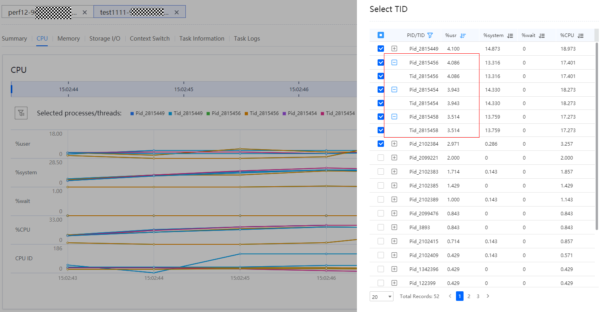

Prerequisites
A process/thread performance analysis task is complete.
Procedure
- In the Project Management area, click
 before the target project and analysis task.
before the target project and analysis task.The node list is displayed.
- Click the name of the target node to view the analysis result.
- Click the node name. The Summary tab page is displayed by default, as shown in Figure 1. For details about the parameters, see the following tables.

- The Tuning Suggestions area is displayed only when the system detects metrics to be optimized. You can expand the area to view detailed suggestions and solutions. Tuning suggestions are provided for certain configuration items and marked with
 . Hover the mouse to view details.
. Hover the mouse to view details. - If Analysis Object is set to Application and System Call Tracing is enabled during the creation of a process/thread performance analysis task, the analysis results contain the System Call area. For details about the parameters, see Table 5.
Table 1 Parameters in the CPU area Parameter
Description
PID/TID
Process or thread ID.
%user
CPU usage of a task in the user space.
%system
CPU usage of a task in the kernel space.
%wait
CPU usage of a task in the I/O waiting state.
%CPU
CPU usage of a task.
Command
Command corresponding to the current task.
Table 2 Parameters in the Memory area Parameter
Description
PID/TID
Process or thread ID.
minflt/s
Number of secondary page faults per second, that is, number of page faults generated when a virtual memory address is mapped to a physical memory address. No page needs to be loaded from the hard drive.
majflt/s
Number of main page faults per second. When a virtual memory address is mapped to a physical memory address, the corresponding page is in the swap memory. Such page faults are major page faults, which are generated when the memory is insufficient. Pages need to be loaded from the hard drive.
VSZ
Size of the virtual memory used by a task, in KB.
RSS
Resident set size (RSS), that is, the size of the physical memory used by a task, in KB.
%MEM
Memory usage of a task.
Command
Command corresponding to the current task.
Table 3 Parameters in the Storage I/O area Parameter
Description
PID/TID
Process or thread ID.
kB_rd/s
Volume of data (in KB) read by a task from a hard drive per second.
kB_wr/s
Volume of data (in KB) written by a task to a hard drive per second.
iodelay
I/O delay (in clock cycles), including the I/O waiting time and I/O insertion end time.
Command
Command corresponding to the current task.
Table 4 Parameters in the Context Switch area Parameter
Description
PID/TID
Process or thread ID.
cswch/s
Number of proactive task context switchovers per second. Generally, a proactive task context switchover occurs because the task cannot obtain required resources. For example, when system resources such as I/O and memory resources are insufficient, a proactive task context switchover occurs.
nvcswch/s
Number of passive task context switchovers per second. Generally, a task is forcibly scheduled by the system because the time slice is due or the process is preempted by a process with a higher priority. As a result, a passive task context switchover occurs. For example, when a large number of processes are contending for CPU, a passive task context switchover is likely to occur.
Command
Command corresponding to the current task.
Table 5 Parameters in the System Call area Parameter
Description
PID/TID
Process or thread ID.
%time
Percentage of the system CPU time.
seconds/s
Total system CPU time, in seconds.
usecs/call(s)
Average system CPU time for each call, in milliseconds.
calls
Number of system calls in the sampling process.
errors
Number of system calling failures in the sampling process.
syscall
System call name.
- The Tuning Suggestions area is displayed only when the system detects metrics to be optimized. You can expand the area to view detailed suggestions and solutions. Tuning suggestions are provided for certain configuration items and marked with
- Click the CPU tab page. The CPU analysis result of the process or thread is displayed, as shown in Figure 2. For details about the parameters, see Table 6.
- The CPU tab page displays the collected time sequence data of CPU performance metrics in line charts.
- By default, the analysis results of all processes or threads are displayed in a line chart. When you hover the cursor over a process or thread, detailed parameter information is displayed. You can click the process or thread to determine whether to display it in the current view. If there are too many processes or threads, the page is automatically collapsed.
- If the lines overlap, you can click the color icon corresponding to the process or thread to filter the lines. You can move the cursor onto a process or thread ID to view detailed parameter information
- and click
 to go to the process filtering page. By default, threads are sorted by user. The first five processes or threads are selected by default. You can click a process in the filter box to view the threads of the process.
to go to the process filtering page. By default, threads are sorted by user. The first five processes or threads are selected by default. You can click a process in the filter box to view the threads of the process.
Figure 3 CPU filtering
Figure 4 Process/Thread details in the CPU filter box
- Click the Memory tab page. The memory analysis result of the process or thread is displayed, as shown in Figure 5. For details about the parameters, see Table 2.
- The Memory tab page displays the collected time sequence data of memory performance metrics in line charts.
- By default, the analysis results of all processes or threads are displayed in a line chart. When you hover the cursor over a process or thread, detailed parameter information is displayed. You can click the process or thread to determine whether to display it in the current view. If there are too many processes or threads, the page is automatically collapsed.
- You can click
 and select a process or thread to view the line chart of the corresponding analysis result. By default, the processes or threads are sorted in descending order based on the minflt/s attribute. By default, the first five processes or threads are selected. You can click a process in the filter box to view the threads of the process.
and select a process or thread to view the line chart of the corresponding analysis result. By default, the processes or threads are sorted in descending order based on the minflt/s attribute. By default, the first five processes or threads are selected. You can click a process in the filter box to view the threads of the process. - If the lines overlap, you can click the color icon corresponding to the process or thread to filter the lines. You can move the cursor onto a process or thread ID to view detailed parameter information
- Click the Storage I/O tab page. The storage I/O analysis result of the process or thread is displayed, as shown in Figure 6. For details about the parameters, see Table 3.
- The Storage I/O tab page displays the collected time sequence data of storage I/O performance metrics in line charts.
- By default, the analysis results of all processes or threads are displayed in a line chart. When you hover the cursor over a process or thread, detailed parameter information is displayed. You can click the process or thread to determine whether to display it in the current view. If there are too many processes or threads, the page is automatically collapsed.
- You can click
 and select a process or thread to view the line chart of the corresponding analysis result. By default, the processes or threads are sorted in descending order based on the kB_rd/s attribute. By default, the first five processes or threads are selected. You can click a process in the filter box to view the threads of the process.
and select a process or thread to view the line chart of the corresponding analysis result. By default, the processes or threads are sorted in descending order based on the kB_rd/s attribute. By default, the first five processes or threads are selected. You can click a process in the filter box to view the threads of the process. - If the lines overlap, you can click the color icon corresponding to the process or thread to filter the lines. You can move the cursor onto a process or thread ID to view detailed parameter information
- Click the Context Switch tab page. The context switch analysis result of the process or thread is displayed, as shown in Figure 7. For details about the parameters, see Table 4.
- The Context Switch tab page displays the collected time sequence data of context switching performance metrics in line charts.
- By default, the analysis results of all processes or threads are displayed in a line chart. When you hover the cursor over a process or thread, detailed parameter information is displayed. You can click the process or thread to determine whether to display it in the current view. If there are too many processes or threads, the page is automatically collapsed.
- You can click
 and select a process or thread to view the line chart of the corresponding analysis result. By default, the processes or threads are sorted in descending order based on the cswch/s attribute. By default, the first five processes or threads are selected. You can click
and select a process or thread to view the line chart of the corresponding analysis result. By default, the processes or threads are sorted in descending order based on the cswch/s attribute. By default, the first five processes or threads are selected. You can click  in front of a process in the filter box to view the threads of the process.
in front of a process in the filter box to view the threads of the process. - If the lines overlap, you can click the color icon corresponding to the process or thread to filter the lines. You can move the cursor onto a process or thread ID to view detailed parameter information
- Click the Task Information tab to view the detailed configuration and collection information about the current node task. See Figure 8.
If the task fails to be executed, the failure cause is displayed on the Task Information tab page.
- Click the Task Logs tab to view the logs about the sampling and analysis processes.
- Click the node name. The Summary tab page is displayed by default, as shown in Figure 1. For details about the parameters, see the following tables.